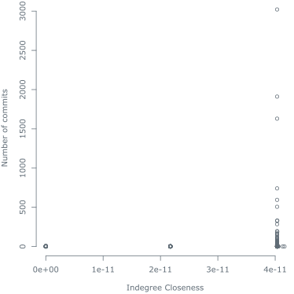

NodeJS Analytics
Node.js is a JavaScript runtime built on Chrome's V8 JavaScript engine. Node.js uses an event-driven, non-blocking I/O model that makes it lightweight and efficient. The Node.js package ecosystem, npm, is the largest ecosystem of open source libraries in the world.
Below you can find a network analysis on the Node.js github repository. The analysis is focused exclusively on github users which have contributed to the Node.js repository, or have interacted with a contributor. In the first part of the analysis, we will focus only on relationships between contributors. On the second part, we will focus on relationships between contributors and non contributors.
The analysis is based on data extracted by the author from the public GitHub API using the homemade github crawler. A CSV can be downloaded from here. All content is open source and may be used freely for any purpose.

Table of contents
Commits
- Number of commits: $14415$
- Mean commits: $17.818$
- Median commits: $1$
Top 5 contributors by commits:
1. ry $3021$ 2. bnoordhuis $1911$ 3. isaacs $1630$ 4. indutny $741$ 5. piscisaureus $595$ Figure 2: Number of commits (log) histogram.
Contributor Network
First some analysis has been conducted on users which have contributed to the project.
Node.js contributor metrics:
- Network size: $1066$
- Indegree centralization score: $0.1810956$
- Outdegree centralisation score: $0.426166$
- Clustering coefficient: $0.1674887$
- Average path length: $3.97246$
- Diameter: $10$
Indegree
Indegree is defined as the number of contributors following a specific contributor. All values are normalised.
- Mean indegree: $5.758881 \times 10^{-3}$
- Median indegree: $9.389671 \times 10^{-4}$
Top 5 contributors by indegree:
1. tj $1.8685446 \times 10^{-1}$ 2. isaacs $1.6995305 \times 10^{-1}$ 3. substack $1.6431925 \times 10^{-1}$ 4. ry $1.3239437 \times 10^{-1}$ 5. indutny $1.0985915 \times 10^{-1}$  Figure 3: Contributor indegree (log) histogram.
Figure 3: Contributor indegree (log) histogram. Figure 4: Number of commits with respect to indegree.Figure 5: Number of commits (log) with respect to indegree (log).
Figure 4: Number of commits with respect to indegree.Figure 5: Number of commits (log) with respect to indegree (log).
Outdegree
Outdegree is defined as the number of contributors a specific contributor follows. All values are normalised.
- Mean outdegree: $5.758881 \times 10^{-3}$
- Median outdegree: $9.389671 \times 10^{-4}$
Top 5 contributors by outdegree:
1. cusspvz $4.3192488 \times 10^{-1}$ 2. Sannis $1.6244131 \times 10^{-1}$ 3. roryrjb $1.5211268 \times 10^{-1}$ 4. stevemao $9.859155 \times 10^{-2}$ 5. rjrodger $9.577465 \times 10^{-2}$  Figure 6: Contributor outdegree (log) histogram.
Figure 6: Contributor outdegree (log) histogram. Figure 7: Number of commits with respect to outdegree.
Figure 7: Number of commits with respect to outdegree. Figure 8: Number of commits (log) with respect to outdegree (log).
Figure 8: Number of commits (log) with respect to outdegree (log).
Betweenness
Betweenness centrality quantifies the number of times a node acts as a bridge along the shortest path between two other nodes. All values are normalised.
- Mean betweenness: $2.340707 \times 10^{-3}$
- Median betweenness: $7.818556 \times 10^{-7}$
Top 5 contributors by betweenness:
1. cusspvz $2.1450663 \times 10^{-1}$ 2. tj $1.7286757 \times 10^{-1}$ 3. fixe $1.4029286 \times 10^{-1}$ 4. substack $7.8804678 \times 10^{-2}$ 5. maxogden $5.6528457 \times 10^{-2}$ Figure 9: Contributor betweenness (log) histogram.Figure 10: Number of commits with respect to betweenness.Figure 11: Number of commits (log) with respect to betweenness (log).
Indegree Closeness
The indegree closeness centrality of a node is a measure of centrality in a network, calculated as the sum of the length of the shortest paths between the node and all other nodes in the directed graph. Thus the more central a node is, the closer it is to all other nodes.
- Mean indegree closeness: $1.672692 \times 10^{-3}$
- Median indegree closeness: $2.013448 \times 10^{-3}$
Top 5 contributors by indegree closeness:
1. jashkenas $2.037482 \times 10^{-3}$ 2. hueniverse $2.032695 \times 10^{-3}$ 3. matthewloring $2.029963 \times 10^{-3}$ 4. getify $2.028092 \times 10^{-3}$ 5. mariano $2.027104 \times 10^{-3}$ Figure 12: Contributor indegree closeness histogram.Figure 13: Number of commits with respect to indegree closeness. Figure 14: Number of commits (log) with respect to indegree closeness.
Figure 14: Number of commits (log) with respect to indegree closeness.
Outdegree Closeness
The outdegree closeness centrality of a node is a measure of centrality in a network, calculated as the sum of the length of the shortest paths between the node and all other nodes in the directed graph. Thus the more central a node is, the closer it is to all other nodes.
- Mean outdegree closeness: $1.068113 \times 10^{-5}$
- Median outdegree closeness: $1.441878 \times 10^{-5}$
Top 5 contributors by outdegree closeness:
1. jamesanthonyferguson $1.498374 \times 10^{-5}$ 2. ateich $1.496872 \times 10^{-5}$ 3. stevejs $1.489603 \times 10^{-5}$ 4. cusspvz $1.484583 \times 10^{-5}$ 5. doug-wade $1.479728 \times 10^{-5}$ Figure 15: Contributor outdegree closeness histogram.Figure 16: Number of commits with respect to outdegree closeness. Figure 17: Number of commits (log) with respect to outdegree closeness.
Figure 17: Number of commits (log) with respect to outdegree closeness.
Outer network
In this part we will analyse the relationship of Node.js contributors to non contributors.
Node.js outer network metrics:
- Network size: $214512$
- Indegree centralization score: $0.1106474$
- Outdegree centralisation score: $0.6055917$
- Clustering coefficient: $0$
- Average path length: $5.007563$
- Diameter: $14$
Indegree
Indegree is defined as the number of any non contributor following a contributor. Values are not normalised.
- Mean indegree: $2.316764 \times 10^2$
- Median indegree: $3.65 \times 10^1$
Top 5 contributors by indegree:
1. tj $2.3737 \times 10^4$ 2. substack $9.959 \times 10^3$ 3. jashkenas $9.856 \times 10^3$ 4. JacksonTian $9.802 \times 10^3$ 5. isaacs $5.938 \times 10^3$ Figure 18: Indegree (log) histogram.Figure 19: Number of commits with respect to indegree.Figure 20: Number of commits (log) with respect to indegree (log).
Outdegree
Outdegree is defined as the number of contributors following any non-contributor. Values are not normalised.
- Mean indegree: $1.55622 \times 10^{-2}$
- Median indegree: $10$
Top 5 contributors by outdegree:
1. cusspvz $1.29908 \times 10^5$ 2. Sannis $1.101 \times 10^3$ 3. roryrjb $1.026 \times 10^3$ 4. errordeveloper $9.63 \times 10^2$ 5. springmeyer $8 \times 10^2$ Figure 21: Outdegree (log) histogram.Figure 22: Number of commits with respect to outdegree.Figure 23: Number of commits (log) with respect to outdegree (log).
Betweenness
Betweenness centrality quantifies the number of times a node acts as a bridge along the shortest path between two other nodes.
- Mean betweenness: $3.4174197 \times 10^7$
- Median betweenness: $2.173335 \times 10^6$
Top 5 contributors by betweenness:
1. cusspvz $12944848888 \times 10^{10}$ 2. tj $3400372130 \times 10^9$ 3. substack $2.816072775 \times 10^9$ 4. maxogden $8.40861175 \times 10^8$ 5. JacksonTian $7.86839300 \times 10^8$ Figure 24: Betweenness (log) histogram.Figure 25: Number of commits with respect to outdegree.Figure 26: Number of commits (log) with respect to outdegree (log).
Indegree Closeness
The indegree closeness centrality of a node is a measure of centrality in a network, calculated as the sum of the length of the shortest paths between the node and all other nodes in the directed graph. Thus the more central a node is, the closer it is to all other nodes.
- Mean indegree closeness: $3.848217 \times 10^{-11}$
- Median outdegree closeness: $4.033417 \times 10^{-11}$
Top 5 contributors by indegree closeness:
1. jashkenas $4.161623 \times 10^{-11}$ 2. getify $4.131699 \times 10^{-11}$ 3. jordansissel $4.056699 \times 10^{-11}$ 4. hueniverse $4.046699 \times 10^{-11}$ 5. agl $4.044733 \times 10^{-11}$ Figure 27: Indegree closeness (log) histogram.Figure 28: Number of commits with respect to indegree closeness.Figure 29: Number of commits (log) with respect to indegree closeness (log).
Outdegree Closeness
The outdegree closeness centrality of a node is a measure of centrality in a network, calculated as the sum of the length of the shortest paths between the node and all other nodes in the directed graph. Thus the more central a node is, the closer it is to all other nodes.
- Mean indegree closeness: $5.385104 \times 10^{-11}$
- Median outdegree closeness: $6.953937 \times 10^{-11}$
Top 5 contributors by outdegree closeness:
1. ss22ever $6.955598 \times 10^{-11}$ 2. ojss $6.955182 \times 10^{-11}$ 3. soleboxy $6.954869 \times 10^{-11}$ 4. CraigCav $6.954767 \times 10^{-11}$ 5. wzoom $6.954560 \times 10^{-11}$ Figure 30: Outdegree closeness histogram.Figure 31: Number of commits with respect to outdegree closeness.Figure 32: Number of commits (log) with respect to outdegree closeness (log).
Contributor Communities
Next, we run the network through a community detection algorithm in order to discover dense subgraphs. We have used the walktrap algorithm for our community detection. The algorithm has detected a total of 193 communities, of which 3 are significantly larger than the other. In our comparison we are only going to focus on the larger communities.

| Community | Size | Mean Commits | Mean Indegree | Mean Outdegree | Mean Betweenness | Mean Indegree Closeness | Mean Outdegree Closeness |
|---|---|---|---|---|---|---|---|
| Cyan | $ \small ^*269 $ | $ \small 2.605948 \times 10 $ | $ \small 1.020647 \times 10^{-2} $ | $ \small ^*1.098836 \times 10^{-2} $ | $ \small ^*1.992208 \times 10^{-3} $ | $ \small 1.930608 \times 10^{-3} $ | $ \small ^*2.697024 \times 10^{-3} $ |
| Green | $ \small 207 $ | $ \small ^*2.933333 \times 10$ | $ \small ^*1.353564 \times 10^{-2} $ | $ \small 1.09274 \times 10^{-2} $ | $ \small 1.765154 \times 10^{-3} $ | $ \small ^*1.995071 \times 10^{-3} $ | $ \small 2.569517 \times 10^{-3} $ |
| Orange | $ \small 90 $ | $ \small 8.244444 $ | $ \small 2.723005 \times 10^{-3} $ | $ \small 7.125717 \times 10^{-3} $ | $ \small 1.710008 \times 10^{-3} $ | $ \small 1.978489 \times 10^{-3} $ | $ \small 2.305728 \times 10^{-3} $ |